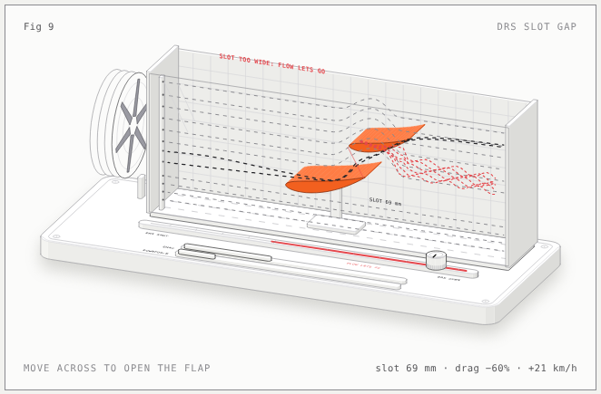
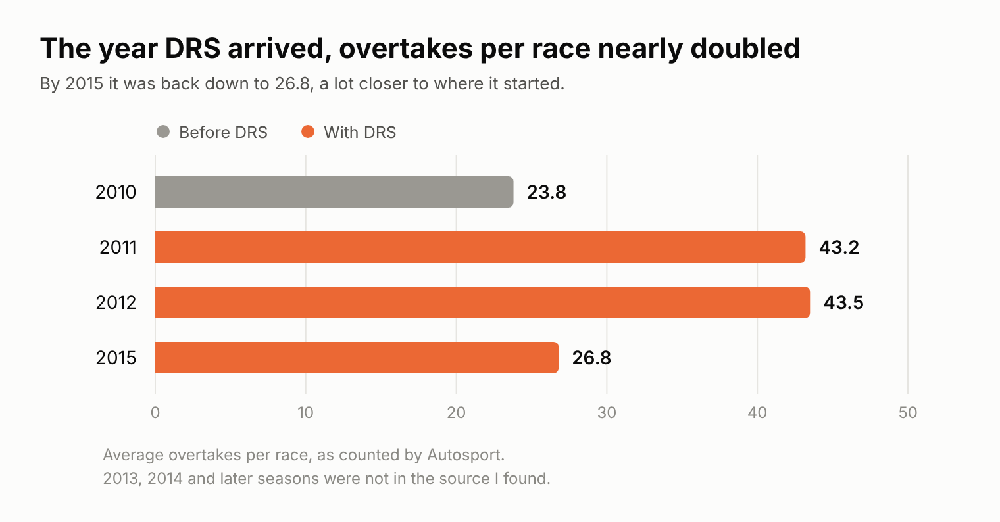
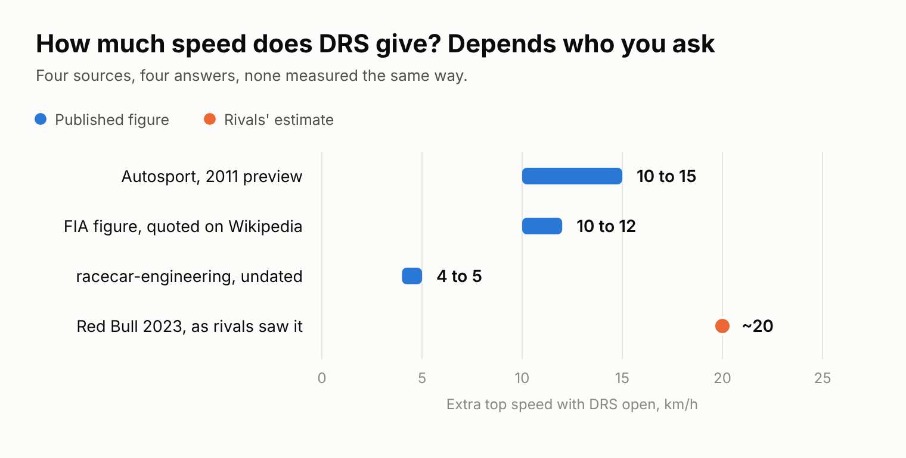
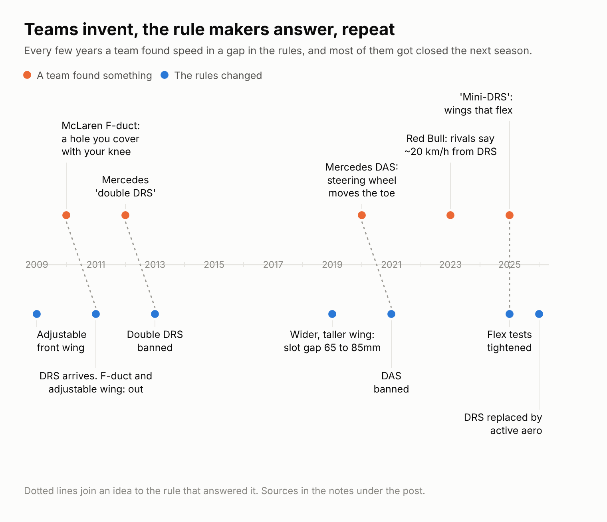

Fifteen seasons of one button, three banned inventions and a disqualification over 0.2mm
Lately, I have been fascinated by how little it takes to change what a Formula 1 car does on a straight, which is how I ended up building a tiny wind tunnel with a rear wing in it (it's here if you want to move the flap yourself: [link to the wind tunnel]) and then falling down a hole about why DRS exists, who kept trying to get around it, and why it finally went away after 15 seasons.
[IMAGE: hero-wind-tunnel.png, the wind tunnel preview]

The story usually starts at the 2010 Abu Dhabi Grand Prix, where Fernando Alonso needed a result to win the title and spent the race stuck behind Vitaly Petrov's Renault, finishing 7th while Sebastian Vettel won the race and the championship by 4 points. Ferrari's Aldo Costa later admitted "we got it wrong" about the early stop that put Alonso behind Petrov in the first place, so DRS wasn't really invented because of one strategy call, but it makes a good story and the timing is hard to ignore.
F1 had already tried fixing overtaking more than once by then, with an Overtaking Working Group formed back in 2007 (Paddy Lowe, Rory Byrne, Pat Symonds and Charlie Whiting among the names) and a driver-adjustable front wing flap in 2009 and 2010. Meanwhile McLaren had worked out that if the driver covered a small hole in the cockpit with his knee, air would go to a slot in the rear wing and stall it on the straights, cutting drag, which is the most F1 sentence I have ever typed. The teams voted the F-duct out for 2011 on cost and safety grounds (people were worried about drivers going down the straights with barely a hand on the wheel), and the FIA replaced it with a driver-operated rear wing, so in other words they banned a driver-operated rear wing trick and brought in a driver-operated rear wing trick.
The pitch was simple. Get within a second of the car in front at a detection point and in the zone you can press a button, the upper flap of your rear wing lifts to open a 50mm slot gap, downforce drops by about 10 per cent and you gain something like 10 to 15 km/h, at least according to Autosport's preview at the time.
And it worked, at least on paper. Autosport counted an average of 23.8 overtakes per race in 2010 and 43.2 in 2011, which is nearly double, and it stayed there for 2012 (43.5) before sliding back to 26.8 by 2015.
[IMAGE: chart-1-overtakes.png]

Not everyone was sold. Mark Webber, in Shanghai that first year, said he was "still not a huge fan" because "sometimes the overtaking moves aren't that genuine, because a guy'll have nothing left to fight back with" [check wording against the Motor Sport piece], which is a polite way of saying he had been passed by a button.
The first thing to know is that a rule saying "the rear wing can do this one thing" is also, to a good engineer, a rule that doesn't say what else the rear wing can do while it's at it. In 2012 Mercedes' W03 had what everyone called a double DRS, where opening the rear flap also stalled the front wing through ducting that ran from the rear wing endplate through the car. Lotus protested at the Chinese Grand Prix, the stewards rejected it, and a majority of the teams agreed to ban it for 2013 (Mercedes was against).
In 2020 Mercedes turned up in testing with Dual-Axis Steering, where pushing and pulling the steering wheel changed the front wheels' toe, and Red Bull protested after the Austrian Grand Prix, the stewards found it was part of the steering and the protest "not founded", and it was banned for 2021 anyway, which is the sort of ending that tells you everything about how these things go.
And the one that wasn't banned, because it wasn't really a trick, was Red Bull in 2023, when rival teams were putting the DRS advantage at around 20 km/h. Verstappen was trapped at 337.5 km/h at the Australian Grand Prix against Hamilton's 329.7, and Fred Vasseur called it a "mega big DRS effect" [check quote].
[IMAGE: chart-3-speed.png]

It didn't always go well either. Schumacher's DRS stuck open at the 2012 Canadian Grand Prix and he retired with a broken hydraulic pipe, and Alonso's did the same on lap 8 of the 2013 Bahrain Grand Prix, which meant two stops and 8th place.
For 2019 the rear wing got wider and taller and the maximum DRS opening went from 65mm to 85mm, which was projected to make it 25 to 30 per cent more powerful. A few seasons later Hamilton was excluded from qualifying in Brazil after his rear wing was found to be 0.2mm outside the 85mm limit when open, which is roughly the thickness of two sheets of printer paper. In 2022 the new ground-effect cars arrived and DRS stayed anyway, kept in as a precaution, and Melbourne had four zones planned before one was removed for safety, then put back the next year as "the most at any Grand Prix".
By 2025 the argument was about wings that bent. The FIA tightened the flex tests and narrowed the closed slot gap range slightly (to 9.4 to 13mm, per The Race), after Red Bull's Pierre Wache said Ferrari and McLaren were still "doing the mini-DRS stuff" [check quote], and the FIA changed its definition so a rear wing flap was either closed or open and nothing in between.
[IMAGE: chart-2-teams-vs-rules.png]

For 2026 DRS was replaced by active aerodynamics, with moving front and rear wings. The first names we were shown were X-mode and Z-mode, then Straight Line and Cornering mode, and the ones that stuck were Straight mode and Corner mode, plus an Overtake mode (originally called Manual Override Mode) that gives extra electrical energy within a second of the car ahead. Unlike DRS, straight mode is available all the time whatever the gaps, and Vasseur's take was that it isn't artificial at all, and that DRS was the more artificial of the two.
Lewis Hamilton had said much the same about DRS after the 2017 Brazilian Grand Prix, calling it a "Band-Aid" for "the ultimate flaw in the whole concept of a Formula 1 car: that you can't follow." [check wording] It was a Band-Aid that lasted 15 seasons, outlived three banned inventions and, funnily enough, never made the cars any faster on the straight than they were in 2005, when Montoya was clocked at 372.6 km/h at Monza (Bottas matched it in Mexico in 2016 at 372.5 km/h, and last year's quickest was around 362).
Verdict: a Band-Aid, but a good one, and it gave the teams something to be clever about for 15 years, which is arguably the more interesting legacy.
(Note to self: find out what a stuck active wing does in 2026, because I've seen what a stuck DRS flap did to Schumacher and Alonso.)
END OF POST. Everything below is the fact-check list, not for Substack.